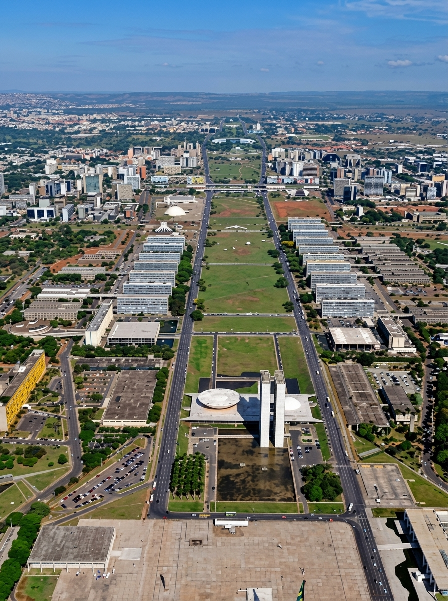

Esplanada dos Ministérios
📍 Localização: Brasília - DF

O Coração Político do País
A Esplanada dos Ministérios é uma ampla via pública de Brasília onde se concentram os edifícios dos ministérios do governo federal brasileiro. Projetada por Lúcio Costa com paisagismo de Burle Marx.